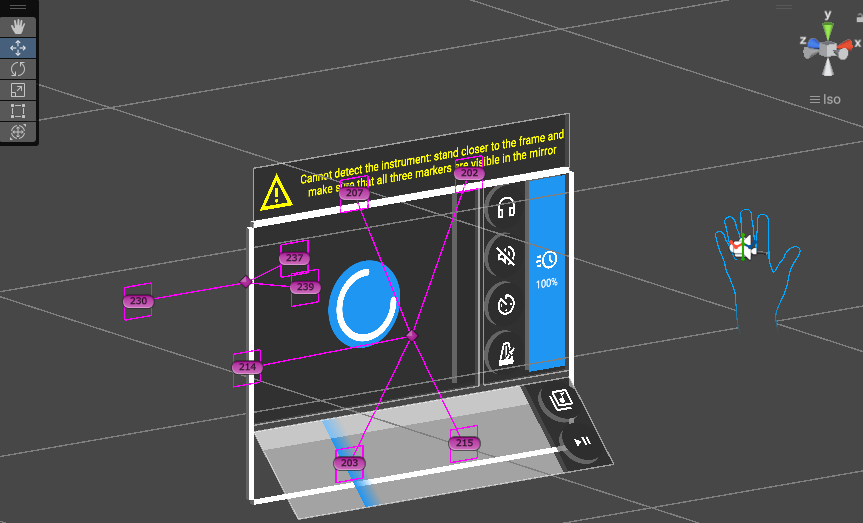

Testing delle feature correnti
Di fronte alla discussione di domani sullo stato del progetto ho calibrato tutto perche' funzioni bene domani e ho
testato alcune feature in modo prolungato per verificare che funzionino adeguatamente.
Introduzione di utility per il tracciamento visivo
Per facilitare l'editing dei punti dei marker ho introdotto delle funzioni di debug che mostrano all'interno
dell'editor di Unity le posizioni dei marker e a che oggetto traccaibile sono attaccati.
Scrittura di script per aiutare la generazione di spartiti
Per generare spartiti ripetitivi come scale ripetute piu' volte ma scalate di un semitono, ho sviluppato uno script
abbastanza velocemente per rendere la generazione semiautomatica, nel tempo che a mano avevo impiegato a scrivere
una scala di spartito (senza traslazioni) oggi sono riusctito a generare due interi spartiti con traslazioni a
partire dal loro modello espresso come codice.
Introduzione di un avvertimento di mancato tracciamento visivo dello strumento
Ora quando lo strumento non e' tracciato viene mostrato un banner che indica il problema e una possibile soluzione
(almeno che non ci siano problemi con i marker applicati in modo errato).
Considerazioni da discutere domani sul funzionamento
Alcune supposizioni sull'utilizzo che avevo fino ad ora sono cambiate:
- L'opzione di attivare o meno il "countdown pre play" non e' utile, dal momento che (ora che funziona
correttamente) questa funzione sembra sempre utile e la sua rimozione semplificherebbe alcune cose, quindi lo
lascerei sempre attivo.
- Si potrebbero aggiungere altri elementi all'interno della realta' specchiata (per ora ci sono solo gli
indicatori
sullo strumento
- Gli indicatori sullo strumento funzionano bene tranne che per la corda "a vuoto": per questa l'approccio non e'
indicato correttamente quindi andrebbero considerati diversi approcci da utilizzare per indicare le informazioni
visive.
- Si potrebbe introdurre un elemento di "gamification" sotto forma di un contatore che indica la "streak" di note
corrette suonate di fila, questo elemento potrebbe essere messo nel mondo specchiato.
- Si potrebbe introdurre un indicazione visiva di pulso del metronomo (oltre che quella uditiva).